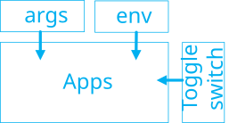
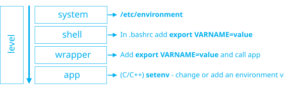

App configuration¶
2024 Software design
Every application operates within a specific environment. To function properly, it is necessary to configure the behavior based on the context. The configuration is defined at various levels, starting from the most general down to the most specific:
Environment variable these are variables defined at the application environment level.
Arguments passed to a program when it’s executed.
Toggle can control whether a feature in the codebase. When the flag is on, the new feature is active for those users. Otherwise if it’s off, this is hidden and not accessible.

Environment variable¶
List all environment variables load in the current context
$ env
HOSTTYPE=x86_64
LANG=en_US.UTF-8
TERM=xterm-256color
XDG_RUNTIME_DIR=/mnt/wslg/runtime-dir
DISPLAY=:0
WAYLAND_DISPLAY=wayland-0
PULSE_SERVER=unix:/mnt/wslg/PulseServer
WSL2_GUI_APPS_ENABLED=1
WSLENV=WT_SESSION:WT_PROFILE_ID:
Load environment variables from dotenv file in Bash
export $(cat profile.env | xargs)

Arguments¶
The arguments can be passed via the command line. Example with the command
find.
find /etc -type f -name *net*
The arguments can be write in the file and used via
xargs.
$ cat filter_only_file_net.args
/etc
-type f
-name "*net*"
$ xargs -a filter_only_file_net.args find
/etc/netconfig
/etc/issue.net
/etc/systemd/networkd.conf
/etc/default/networking
/etc/java-17-openjdk/net.properties
/etc/networks
/etc/init.d/networking
/etc/perl/Net/libnet.cfg
How to handle arguments:
in Python using argparse
in C++ using program_options
Note
usage example of program_options in C++
// g++ main.cpp -lboost_program_options
#include <boost/program_options.hpp>
#include <iostream>
int main(int argc, char **argv) {
namespace ops = boost::program_options;
ops::variables_map vm;
ops::options_description parser("Usage: perf\n\n Options: ");
double var = 0;
parser.add_options()("help,h", "help message");
parser.add_options()("var,v", ops::value<double>(&var), "var (default : \"0\")");
try {
ops::store(ops::parse_command_line(argc, argv, parser), vm);
ops::notify(vm);
} catch (const ops::error &ex) {
throw std::runtime_error(std::string{} + __FILE__ + ":" +
std::to_string(__LINE__) +
" [-] error program_options " + ex.what());
}
if (vm.count("help")) {
std::cout << parser << std::endl;
exit(EXIT_SUCCESS);
}
std::cout<<var<<std::endl;
}
Toggle¶
The toggle allows to activate or desactivate fonctionnality run by a software. The implementation is very simple, it’s a boolean associated with a variable.
Basicaly, it can be check like
toggles.is_activited(name) return true otherwise false.
The implementation depends on:
the performance to check if the variable is activated
the variable value changes during execution time or only when the program loads
the scope of toggles: if there is a global need for singleton